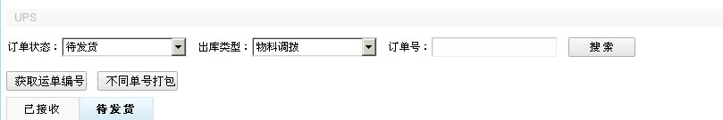
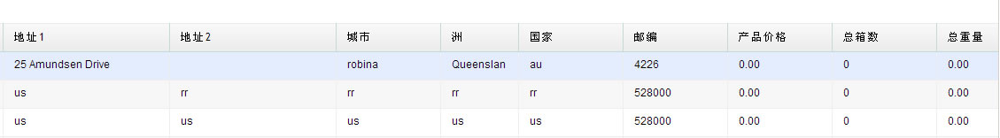

功能：用于ups订单生成xml，生成发票方便物流操作发货。

(图1)

(图2)
1)上图为搜索页面：根据物料调拨和出库订单的出库类型，订单状态，订单号，查询。(图1)
2)不同单号打包：根据订单的ship to信息一致，来判定多个订单是否打包，打包之前需完善订单的ship to信息。
3)订单打包后，可以设定发货每个产品的价格，还有总箱数，总重量。(图2)
4)最后就可以获取运单编号，即时生成一个xml文件。